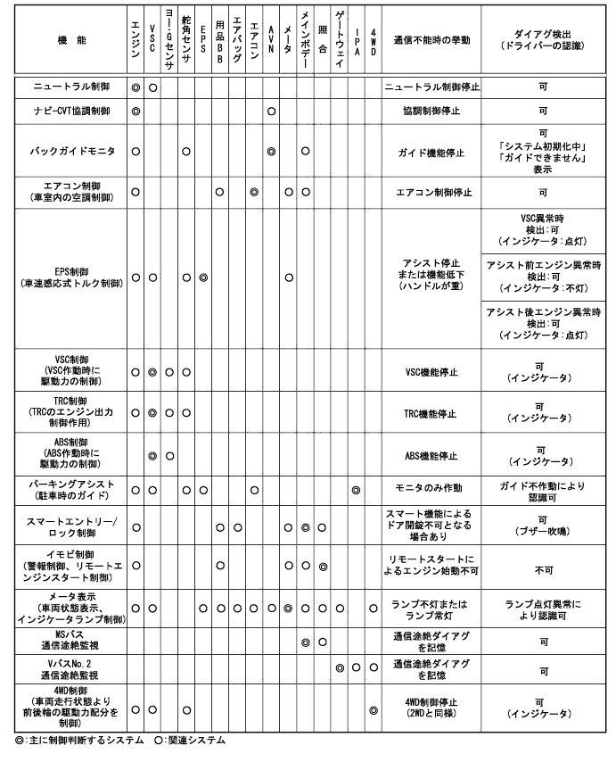

CAN Communication System Fail-safe Chart |
The fail-safe function is designed so that if any bus (communication line) fails due to a short circuit, etc., each system switches to its specified fail-safe processing to prevent system malfunction.
Effects on each system when communication is impossible (refer to each system for details)
